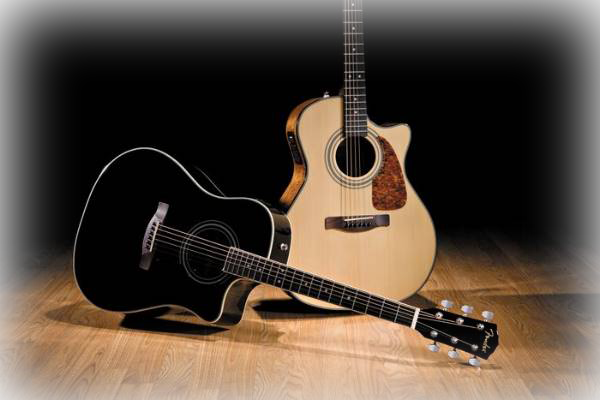

民谣吉他(steel-string acoustic guitar,即原声钢弦吉他之意)，是种弹拨乐器，形状与提琴相似，通常有六根弦。最早是美国西部乡村音乐的伴奏乐器。通常作为歌曲的伴奏形式出现，以美国西部乡村音乐为主要演奏题材。他在流行音乐、摇滚音乐、蓝调、民歌中被视为常用乐器。也被用于古典音乐，有大量的独奏曲，室内乐和管弦乐中偶有使用。近年来出现的电箱两用民谣吉他给舞台表演者带来莫大的帮助。
正规的民谣吉他，它的琴弦是用六个白色固弦钉固定在琴码上的，各弦之间距离为7mm，共鸣箱结合处在14品。特点：1.钢丝弦。2.个头比较大些，琴颈较细。3.琴弦为钢弦与琴箱接头处为十四品。4.表面板上可能有一块半月形保护板。5.油漆往往较花哨，欠庄重。以伴奏为主。
